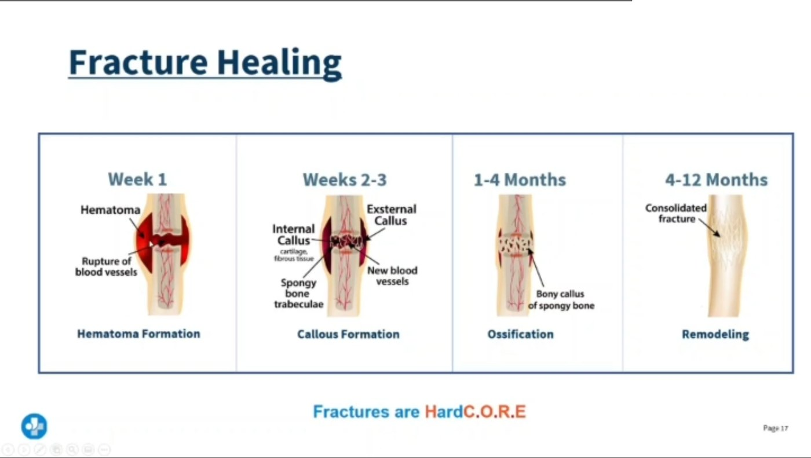

Nursing Field Notes / Musculoskeletal · Fracture & Trauma Care Series · Page 1 of 4
Fracture 🦴
Bone Breaks, Neurovascular Checks & Emergency Stabilization
NG-056MusculoskeletalADHD-friendly visual edition
A fracture is any break in the continuity of a bone — from a hairline crack to a shattered shaft. The nurse's job isn't the x-ray, it's everything around the bone: is the skin open, is the limb still getting blood flow and nerve signal, and is there a life threat (pelvic bleed, spinal shock, skull fracture) hiding behind the obvious injury? This page builds the 6 P's — the neurovascular assessment used on every single page in this series.
🚨 Splint before you moveImmobilize the joint above & below the break first — always.
🦴
TYPES
STEP 1 · NAME THE BREAK
Every fracture question starts by naming what kind of break it is — the name usually tells you the risk.

From your lecture. Four stages, and the timescale is the examinable part: hematoma → callus → ossification → remodeling, week 1 out to 12 months.
🩻 Six fracture patterns you must recognize on sight
New study diagram: Fracture and cast care: alignment and circulation. Open full resolution.
Pain out of proportion or pain with passive stretch can be an early compartment-syndrome clue.
Read the picture
Bone disruption
Injury affects bone and nearby tissue.
Stabilization
Reduction and immobilization support alignment.
Healing and monitoring
Protect the site while checking function and perfusion.
Neurovascular checks
Assess pain, sensation, movement, color, temperature and circulation.
Cast care
Keep it dry as directed; avoid inserting objects or altering the cast.
Escalate
Increasing pain, tightness, numbness or new weakness may indicate a complication.
🧠 “COGS-C” — Closed · Open · Greenstick · Spiral · oblique(Cut diagonal) · Comminuted/compression. Whatever the name — always ask “is the skin open?” first, because that changes everything about infection risk.
🚪 Closed vs Open — the one question that changes care
Closed
Open “compound”
Skin intact — bone does not break the skin surface
Skin surface broken — bone visible or was exposed
Lower infection risk
High infection risk — ask about last tetanus vaccine
Cover, splint, x-ray
Sterile dressing, never push the bone back in, IV antibiotics often started
🧠 HESI trap: open leg fracture → the nurse should ask “when was your last tetanus shot?” — broken skin + soil/debris exposure = tetanus risk.
⚠️ Risk factors — what sets a fracture up
🛏️ Prolonged bed rest — disuse osteoporosis, muscle atrophy & loss of tone
🦴 Osteoporosis — weak, porous bone (see the Osteoporosis page in this library)
💊 Steroids “-sone” — prednisone, dexamethasone, hydrocortisone, fludrocortisone — long-term use thins bone
💥 Trauma — falls, MVC, sports
🧠 Kaplan SATA: long-term bed rest effect the nurse should worry about most → loss of muscle tone and disuse atrophy (select-all-that-apply style question).
🖐️
ASSESS
STEP 2 · THE 6 P's
This is the neurovascular check you will run on every injured or casted limb — memorize it here, it repeats on every page in this series.
🖐️ THE 6 P's — neurovascular assessment of an injured limb
🧠 “Early vs late.”Paresthesia (tingling) shows up first — that's your window to intervene. Pulselessness and paralysis are late signs — by the time you see those, tissue damage may already be underway. Never wait for all 6 P's — one abnormal P = notify the HCP.
🩸 Pelvic fracture — the priority finding you must catch
💥 Pelvic fracture — large vessels run right through the pelvis
▼
🩸 Internal bleeding into the pelvic cavity (can be liters, hidden)
Also watch for: crepitus (grating sensation/sound of bone ends rubbing) and muscle spasm around the fracture site.
🧠 Saunders trap: "Which is the most serious finding for a pelvic fracture?" → hypotension, tachycardia, and hematuria — signs of hemorrhagic shock and bladder/urethral injury, not just local pain.
🦵 Hip fracture — the classic exam picture
📏 Shortening of the affected leg
🔄 Affected leg often externally rotated
😖 Muscle spasm around the hip
🟣 Ecchymosis (bruising) over thigh/hip
⚡ Groin & hip pain that worsens with weight bearing
🧠 Hip fracture = “short & turned out.” A leg that looks shorter and rotated outward, in an older adult who fell, is a hip fracture until proven otherwise.
🧠 Skull, spine & mandible — trauma above the neck
Basilar skull fracture: clear fluid from nose/ear (CSF rhinorrhea/otorrhea) — never suction or pack the nose, test for a "halo" ring on gauze.
Spinal fracture at T6 or higher → neurogenic shock:hypotension + bradycardia + skin that stays pink & dry (loss of sympathetic tone, not hypovolemia).
Mandibular fracture: bleeding/drooling from the mouth → suction the mouth, protect the airway first.
🧠 “Bradycardia + hypotension + warm dry skin” = neurogenic shock, NOT hypovolemic shock (which is tachycardic, cool, clammy). Easy to mix up on an exam.
🩺
CARE
STEP 3 · STABILIZE FIRST
Immobilize before you move anything — then reassess the 6 P's before and after every intervention.
🚑 Emergency stabilization — in order
1
ABCs first — treat life threats (airway, breathing, hemorrhage) before the limb itself
2
Assess the 6 P's distal to the injury before touching it
3
Splint the joint above AND below the fracture before any movement
4
Reassess the 6 P's immediately after splinting — a tight splint can cause the exact injury it prevents
5
Elevate & ice the limb to reduce swelling
🧠 “Check, splint, check again.” Neurovascular status is assessed before AND after every splint, cast, or traction device is applied — that repeated check is the single most tested nursing action in this whole unit.
⏳ Fracture healing timeline — what's happening under the cast
🧠 “Clot → Soft → Hard → Remodel.” A soft callus (week 1–2) will bend or re-break under stress — that's exactly why a fresh cast means no weight-bearing yet, even though the limb is immobilized. Full remodeling can take up to two years.
🚨 Open fracture — do this, never that
✅ Cover exposed bone with a sterile dressing
✅ Immobilize/splint as-is
✅ Confirm tetanus vaccination status
❌ Never push exposed bone back under the skin
❌ Never irrigate or clean the wound aggressively in the field
🧠 Cover it, don't cover it up. The bone stays where it is — the HCP reduces it in a controlled, sterile setting.
🧊 Pain, swelling & the compartment syndrome watch
Fracture pain classically includes bruising, swelling, muscle spasm, and crepitus (grating). Elevate the limb, apply ice, and treat pain proactively.
Pain that keeps climbing despite analgesia — especially with passive stretch — is not "just a bad fracture." It is the first sign of compartment syndrome, covered in full on the Cast Care page in this series.
🧠 If pain doesn't match the picture — always think compartment syndrome, not "needs more pain meds."
➡️ Where this story goes next
Fracture care doesn't stop at the ED. This series follows the same patient forward:
🛏️ NG-058 Buck's Traction & postoperative musculoskeletal care
🫁 NG-061 Fat embolism & osteomyelitis — the two big fracture complications
🦿 NG-063 Cast care — teaching the 6 P's back to the patient at home
🧠 The 6 P's you learned above are the exact same checklist used for traction pin sites, casted limbs, and post-op neurovascular checks — one skill, reused everywhere in orthopedics.
⚡
QUICK RECALL
SAY IT OUT LOUD
🦴 Open = tetanus checkclosed = skin intact, open = skin broken + infection risk
Part 1 — what a fracture is, the key points, and the causes: trauma, direct blow, twisting, repetitive stress and pathological conditions. — swipe it sideways if it is cut off, or tap to open it full size.
Part 2 — the five stages of bone healing in order: hematoma, inflammation, soft callus, hard callus, remodeling, with the weeks each takes. — swipe it sideways if it is cut off, or tap to open it full size.
Part 3 — the eight fracture types drawn: closed, open, complete, incomplete, greenstick, transverse, oblique and spiral. — swipe it sideways if it is cut off, or tap to open it full size.
Part 4 — the nine clinical features, including crepitus (never test for it deliberately) and shortening of the limb. — swipe it sideways if it is cut off, or tap to open it full size.
Part 5 — history, physical examination and the imaging: X-ray is the gold standard, CT for complex, MRI for soft tissue, bone scan for stress fractures. — swipe it sideways if it is cut off, or tap to open it full size.
Part 6 — pain control, closed versus open reduction, immobilization, monitoring, and early mobilization. — swipe it sideways if it is cut off, or tap to open it full size.
Part 7 — the eight nursing priorities, with neurovascular monitoring spelled out: color, warmth, pulse, sensation, movement. — swipe it sideways if it is cut off, or tap to open it full size.
Saved study graphics from your own collection. Each one is someone else’s work — check anything clinical against your course materials before you rely on it.